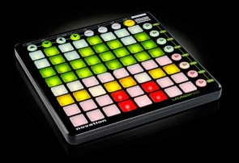

Il y a 6 couleurs de base définies pour WhiteCat, sur la base du launchpad:
Up, Down, Saw, Flash: orange (col 1)
Lock: vert (col 2)
Prev/NextDock, Updown: ambre (col 5)
StopPos: rouge (col 4)
Loop One, Loop All: orange foncé (col 6)
Lock Presets: vert (col 2)
Play, Seek, Loop Chaser embarqué: orange ( col 1)
Go ou en pause: rouge (col 6)
Go Back: rouge (col 6)
On off asservissement de la vitesse du GridPlayer 1 au sequenciel: orange ( col 1)
Play, General Loop: orange (col 1)
CueLoop: rouge (col 4)
Bang It !: rouge (col 4)
Store, Modify,… AudioPlayers: rouge (col 4) et orange (col1)
In, Out, DIn, Dout, Affect: orange foncé (col 6)
Dock color sélectionné: orange foncé (col 6)
Roi sélectionnée: orange foncé (col 6)
Preset sélectionné: jaune (col 3)
Play, Loop, Forward, Backward, Aller retour: orange ( col 1)
Time Mode: orange ( col 1)
On/Off des pistes: vert ( col 2)
Opérateur FadeIn: orange ( col 1)
Opérateur Stay: vert ( col 2)
Opérateur FadeOut: rouge ( col 4)
Page sélectionnée: orange foncé (col 6)
MidiMute (Global): rouge ( col 4)
Tous les états des fenêtres sont en visualition orange sauf:
On/Off affichage du GridPlayer: rouge ( col 4 ) Play: orange ( col 1 ) Mode AutoStop: rouge ( col 4 ) Slave: orange foncé ( col 6) On Off des 4 macros ( Goto/Count/Seek/StopPlay): rouge ( col 4 )
Les codes couleurs du Launchpad:
| 12 | Off Off |
| 13 | Red Low |
| 15 | Red Full |
| 29 | Amber Low |
| 63 | Amber Full |
| 62 | Yellow Full |
| 28 | Green Low |
| 60 | Green Full |
Flash:
| 11 | Red Full |
| 59 | Amber Full |
| 58 | Yellow Full |
| 56 | Green Full |